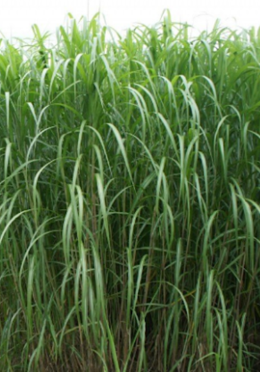
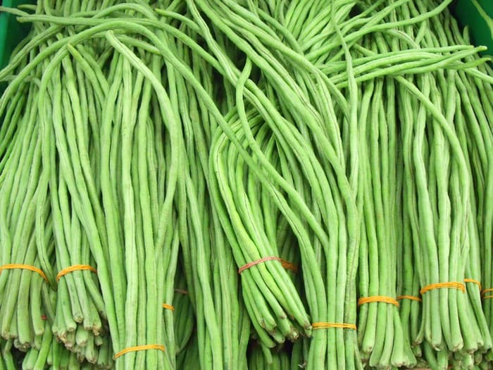

Kambing Kacang adalah rumpun kambing lokal yang persebarannya paling luas dan paling banyak diternakkan di Indonesia. Kambing kacang termasuk jenis kambing berukuran kecil dan pendek. Hal ini dapat dilihat dari tingginya yang hanya 55–60 cm dan bobotnya 20-30 kg.
Pakan Hijauan
Rumput
Rumput gajah, Rumput raja,rumput kolonjono, tebu, jerami, padi, dan jerami jagung
Daun
Daun Singkong, nangka, albasia, waru, ketela rambat, murbei, serta leguminoceae
Kacang-Kacangan
kacang kedelai, kacang tanah, kacang hijau, kacang panjang
Kandang
Beternak kambing membutuhkan kandang sebagai tempat tinggal. Berikut beberapa kriteria yang harus dipenuhi untuk membuat kandang kambing yang baik.
- kandang terpisah dari rumah 5 m, lokasi kandang tidak lembab, bahan kandang kuat dan mudah didapat/murah, sirkulasi udara baik
-
Ukuran Kandang
- Anak: 1 x 1,2 m /2 ekor(lepas sapih)
- Pejantan: 1,2 x 1,2 m / ekor
- Betina Dewasa: 1 x 1,2 m / ekor
- Induk dan anak: 1,5 x 1,5 m / induk + 2 anak
- Bentuk kandang Panggung/kolom
- Ukuran tempat pakan yang ideal adalah panjang dan lebarnya 30 cm serta tingginya 15 cm jika ada lebih dari satu ternak dalam bilik, panjang tempat ditambah 30-40 cm untuk setiap ekor ternak dewasa.
- Tempat air minum ditempatkan pada sisi luar kandang dengan ketinggian sekitar 1m. Kebutuhan air untuk kambing adalah 3-7 liter per hari
Pencatatan Produksi
Kegiatan pencatatan pada kartu produksi mengenai berat kambing merupakan proses rutin pengumpulan dan pengukuran perkembangan serta memantau perubahan yang terjadi pada kambing tiap bulannya. dengan memiliki informasi tentang kambing , kita dapat mengerti apa yang sedang dialami kambing tersebut